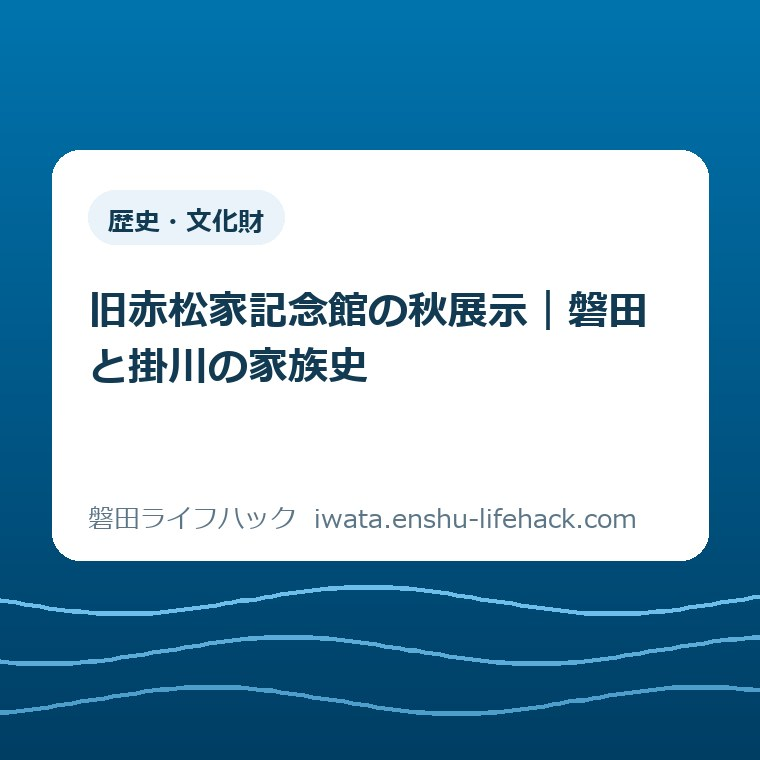
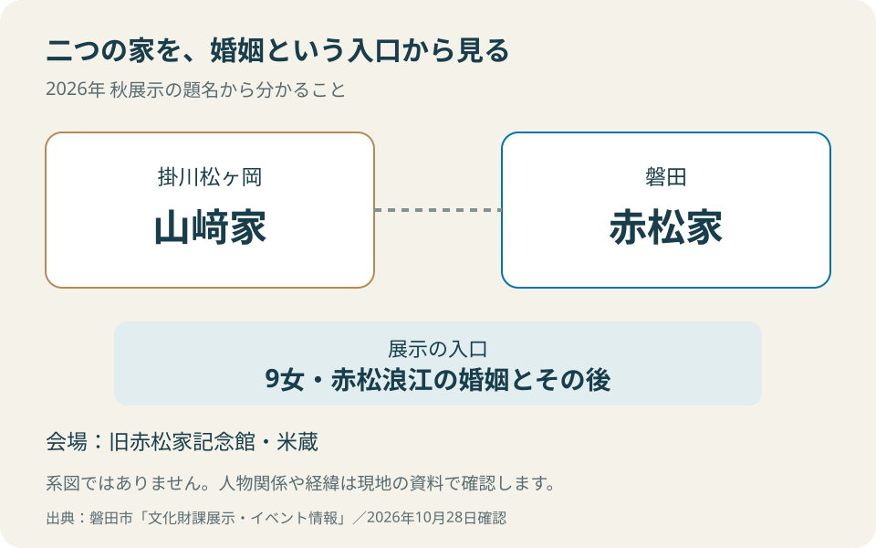
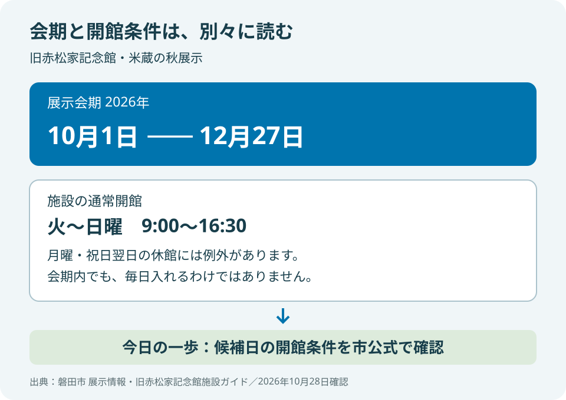

歴史・文化財
旧赤松家記念館の秋展示｜磐田と掛川の家族史

この記事の要点
Q. 旧赤松家記念館では、この秋どんな展示を見られますか？
A. 旧赤松家記念館・米蔵では、2026年10月1日～12月27日、掛川の山﨑家と赤松家を婚姻からたどる展示が案内されています。入館無料。会期中も休館日があるため、今日は家族で候補日を一つ選び、市公式ページで開館条件を確認します。
出かける前から、家族は時間を使っている
旧赤松家記念館の秋の展示は、家族の歴史を入口に磐田と掛川のつながりを見る機会です。ただ、休日に展示へ出かけるには、仕事の予定、家事、子どもの支度、同行する人の体調を合わせる手間がかかります。「無料だから気軽に」と言うだけでは、その準備が抜け落ちます。
大石浩之（磐田市／不動産業）です。私は、地域の文化財を楽しむ予定も、暮らしの段取りの一つだと考えています。一日に何か所も回ることより、帰宅後の家事まで含めて無理がないこと。その基準で、今回の展示と施設案内を読んでみます。
この記事では2026年10月28日に確認した市の案内を使います。施設の利用条件は、訪問日や必要な支援によって確認事項が変わります。制度の適用も個別条件で変わるため、一般の施設紹介だけで利用できる範囲を決めず、最後は市公式ページや施設へ確認してください。
最初に決めたいのは、見学の細かな順路ではありません。家族が動けそうな候補日を一日だけ挙げることです。その日が会期内か、休館日に当たらないかを確かめれば、展示を見に行くための一歩になります。今から休日全部の予定を埋める必要はありません。
秋展示は10月1日から12月27日、会場は米蔵
磐田市の「文化財課展示・イベント情報」には、旧赤松家記念館・米蔵の展示が掲載されています。会期は2026年10月1日から12月27日まで。ページの更新日は2026年10月16日です。この記事の公開日である10月28日は、その会期に含まれます。
展示名は「掛川松ヶ岡・山﨑家と赤松家 ～9女・赤松浪江の婚姻とその後～」です。市のページでは「崎」の旁は大ではなく立、と注記されています。この記事では、その表記に合わせて「山﨑家」と記しています。検索時に字形が違って見えても、まず正式な展示名と会場を照合してください。
題名から確かめられるのは、掛川松ヶ岡の山﨑家と赤松家を取り上げ、赤松浪江の婚姻とその後に焦点を当てる展示だということです。一方、何点の資料が並ぶのか、どの手紙や写真が出るのかは、ここで参照した案内には記載されていません。未確認の展示品を見どころとして挙げることはしません。
会場名の「米蔵」も覚えておきたい情報です。「旧赤松家に着けば、どの建物でも同じ展示がある」とは限りません。敷地内で案内表示を見て、今回の展示会場を確かめる。その小さな確認が、別の展示を見て帰ってしまう行き違いを防ぐと私は考えます。

家族史の入口を、人物の名前一つに絞る
今回の展示題名は、広い地域史の中から「赤松浪江」という一人の名前に目を向けさせます。私は、初めて歴史展示を見るときほど、すべての年号を覚えようとしなくてよいと考えます。誰の、どんな出来事を扱う展示なのか。その問い一つがあるだけで、説明を読む入口ができます。
「婚姻とその後」という言葉を見たら、私は結婚した時点だけで話を閉じず、その後の暮らしがどう示されているかを現地で確かめたいと思います。これは展示内容を先取りした解説ではありません。見学する側が持っていける問いです。実際の説明や資料に書かれた範囲から答えを探します。
子どもと一緒なら、人物名を覚えたかを確かめるより、「この名前はどちらの家の説明に出てきたかな」と話す程度でもよいでしょう。読めない字があっても、同行者がすべて説明する役を背負う必要はありません。分からなかった言葉を一つ持ち帰ることも、私には十分な見学の成果に思えます。
大人同士の見学でも、家族の感想が同じになるとは限りません。人の暮らしに関心を持つ人もいれば、建物に目が向く人もいます。歴史の知識を比べる場にせず、何が気になったかを一つずつ聞く。その余白があれば、短い見学でも後で話題を続けられます。
見付の邸宅跡には、建物の時間も残っている
磐田市の「施設ガイド 旧赤松家記念館」によると、所在地は磐田市見付3884-10です。近代日本の造船技術の先駆者で、明治期に磐田原台地に茶園を開拓した赤松則良の邸宅跡と説明されています。施設ガイドの更新日は2025年5月20日です。
同じ施設ガイドには、明治20年代に建てられた門・塀・土蔵が県・市の指定文化財になっているとあります。敷地内には庭園と記念館があり、記念館では赤松家ゆかりの文化財や寄贈資料などを展示する施設です。今回の秋展示だけで、邸宅跡のすべてを説明しているわけではありません。
私が面白いと感じるのは、造船や茶園という仕事の説明を持つ場所で、今回の展示は婚姻とその後を題材にしている点です。仕事の歴史と家族の歴史が、同じ場所を違う入口から見る手がかりになります。ただし、その関係を具体的な因果として語るには資料が要ります。題名だけで家業や婚姻の事情を決めつけません。
建物を見るときも、外から見える部分と入ってよい部分は分けて考えます。古い建物だから自由に触れてよいわけではありません。現地の表示や施設の案内に従い、見学できる範囲で楽しむ。写真撮影の可否も、展示品ごとの案内を先に確認する形にします。
会期の長さと、実際に入れる日は別に読む
旧赤松家記念館の施設ガイドでは、入館は無料、利用時間は火曜から日曜の午前9時から午後4時30分です。
無料という情報は家計の見通しに役立ちますが、交通費や外出のための支度まで無料になるわけではありません。入館料と、一日の外出にかかる負担は分けて考えます。
通常の休館日は月曜ですが、祝日または振替休日に当たる月曜は開館すると案内されています。さらに、国民の祝日の翌日も休館日です。その翌日が土曜・日曜・月曜に当たる場合は火曜休みとなります。「月曜以外なら必ず開いている」と覚えると、祝日前後の例外を見落とします。
施設の年末年始休館は12月29日から1月3日です。ただし、今回の展示会期は12月27日までと案内されています。施設の年末休館開始日から逆算して「展示も28日までだろう」と判断しないこと。展示の終了日と、施設全体の休館期間は別の情報です。
私は候補日の確認を、会期、曜日、祝日前後の順で行います。三つを見ても判断しづらければ、施設に日付を伝えて確認します。問い合わせる際は「秋の展示は見られますか」だけでなく、「何月何日に、米蔵の展示を見たい」と伝える方が、確認したい内容が具体的になります。

駐車場10台を、家族の移動に置き換える
旧赤松家記念館の駐車場は、施設ガイドで10台と案内されています。
10台は収容台数であり、到着したときの空き台数ではありません。この記事では混む曜日や時間帯を確認していないため、「朝なら空いている」「平日なら安心」といった予測は示しません。
公共交通の案内では、JR磐田駅前バスターミナル2番のりばから、遠鉄バス「二俣山東行き」に乗車し、「河原町北」下車、徒歩1分とされています。これは施設ガイドに記載されたアクセスです。実際に乗る便の運行時刻や帰りの便は、この施設紹介だけでは確定しません。
車でもバスでも、帰宅したい時刻から考えると予定を小さくできます。夕方に買い物や家事があるなら、それを終える時間を先に残す。私は、見学を一つ増やすために帰りを慌ただしくするより、今回の展示だけを見る日があってよいと思います。見学所要時間の目安は未確認なので、一定の分数では約束しません。
施設ガイドには車いす使用者用トイレ、ベビーチェア、貸し出し用車いすの表示があります。ただ、それだけで米蔵までの通路や入口の段差、貸出の利用条件を全部判断することはできません。同行者に必要な支援がある場合は、今回の会場を名指しして確認する方が具体的です。
同じ見付で別の見学も考えるなら、旧見付学校の駐車場と見学順の記事も参考になります。ただし、二つの施設を必ずセットで回る提案ではありません。片方だけにする、次の休日に分ける。家族の準備に見合う予定を選べばよいと考えます。
良い点は入口の具体性、注文したい点は会場情報
今回の案内の良い点は、展示名、会場、会期が一緒に示されていることです。「歴史に親しもう」という広い呼びかけだけでなく、どの家とどの人物を題材にするのかが分かります。家族に外出の相談をするときも、何を見に行くのかを一文で伝えられます。
施設ガイドに入館料、利用時間、駐車場台数、バス停からのアクセスがある点も助かります。歴史に詳しい人だけでなく、まず移動手段を決めたい人が使える情報です。私は、文化財の価値を伝える言葉と同じくらい、こうした数字が見学の入口を支えると考えています。
その上で注文したい点は、米蔵の展示を見る人向けの会場情報を、展示案内からもう少し読み取りやすくしてほしいことです。参照した二つのページだけでは、今回の展示会場の段差や見学時の配慮、展示品の撮影条件までは分かりません。初めて行く家族が、何を問い合わせる必要があるかを判断しやすくなると助かります。
これは設備が不足していると断定する話ではありません。私は現地の状態を今回の取材で確認していません。施設全体の設備表示と、個別の展示会場で使える範囲をつなぐ説明がほしい、という案内の読み手としての意見です。未確認の部分を良し悪しの評価にすり替えないようにします。
展示の先に、家の記録を残した人を見る
家族史を題材にした展示から、私は「何が残っていれば、その家の暮らしを後からたどれるのか」という問いを考えます。これは今回の展示品を説明するものではなく、住まいや家の整理に関わる立場からの見方です。実物に何があるかは、会場の説明に従って確かめます。
家にある写真や古い紙類も、文字が読めるだけで背景まで分かるとは限りません。誰が写っているのか、どこの出来事なのか、いつのものなのか。分かる人の話と資料を結び付ける作業を、私は大切にしたいと思います。もちろん、持ち主の了解なく家族の記録を公開する話ではありません。
この視点は、以前の「史料を遺す」展と古文書のデジタル化の記事にもつながります。そこで紹介した展示の会期は終了しています。現在開催中の催しとしてではなく、家に残る記録をどう考えるかを読むための関連記事です。
文化財を守る仕事に関心が向いたら、いわた文化財フェスティバル2026の記事という別の入口もあります。こちらは11月29日に埋蔵文化財センターと歴史文書館で行う別の催しです。旧赤松家記念館の秋展示と会場や日程を混同しないよう、予定表では別々に扱います。
大石の視点——見た数より、無理が残らないこと
私は、文化財を見に行く日は、見た数よりも家族に無理が残らないことを基準にします。入館料が無料でも、休みを合わせ、移動し、帰宅後の用事を片付ける時間は必要です。家族がすでに払っているその手間を、小さいものとして扱いたくありません。
一方で、予定を小さくすると、地域の歴史に触れる機会まで小さくしてしまうのではないかという迷いもあります。せっかくなら隣の施設も見たい。その気持ちはあります。ただ、私なら最初の一回は会場を一つに絞り、もう一度出かけたいと思える余力を残します。
今回なら、覚えることも一つで構いません。「磐田の赤松家と掛川の山﨑家を、婚姻から見る展示だった」。そこから家族の誰かが疑問を持ったら、次に読む資料を探す。最初から詳しい解説役を用意しなくても、地域を知る入口はつくれると私は考えます。
家の歴史は、有名な人物だけのものではありません。ただし、今回の展示から一般の家族へ話を広げるときも、実際に残された資料と私の感想は分けます。自分の家も同じだったはず、と決めつけず、確かめられる名前や日付から少しずつ読む姿勢を持ちたいものです。
対案・結論——今日は候補日の開館確認を一つ
旧赤松家記念館の秋展示へ行くために、今日することは候補日の開館確認だけで十分です。家族が動ける日を一つ挙げ、市公式の展示会期と施設ガイドの休館条件に照らします。条件が読み切れなければ、施設へその日付と「米蔵の秋展示」を伝えて確認します。
確認用のメモは「候補日・会場・帰宅したい時刻」の三つで足ります。候補日が決まらないなら、会期の終了日だけ共有しておく方法もあります。家族の予定が合わないことを、誰かの関心の低さに結び付けない。暮らしの事情を先に置いてよいと思います。
展示題名が示す家族のつながりと、見付に残る建物を、自分たちの無理のない範囲で見に行く。それが今回の記事で提案したい外出です。以下のFAQと出典は準備の補助として使い、出発前には必ず磐田市公式ページで最新の会期・開館条件を確認してください。
よくある質問
旧赤松家記念館の秋展示は、いつまでですか？
市の展示案内では2026年10月1日から12月27日までです。会場は旧赤松家記念館・米蔵で、山﨑家と赤松家を赤松浪江の婚姻とその後から取り上げます。会期中でも休館日はあります。施設の年末休館開始日と展示終了日を混同せず、候補日を市公式ページで確認してください。
入館料と開館時間はどうなっていますか？
市の施設ガイドでは入館無料、火曜から日曜の午前9時から午後4時30分です。月曜と祝日の翌日は休館条件があり、祝日が重なる場合の例外もあります。単に曜日だけで開館を判断せず、訪問日の祝日前後の並びも含めて公式案内を確認してください。
車いすや子ども連れで行くときは、何を確認しますか？
施設ガイドには車いす使用者用トイレ、ベビーチェア、貸し出し用車いすの表示があります。ただし、今回の米蔵会場までの通路や段差、貸出条件は参照資料だけでは確認できません。必要な支援と候補日を施設へ伝え、会場で利用できる範囲を確認してください。
参考にした公式情報
- 文化財課展示・イベント情報／磐田市（2026年10月16日更新、2026年10月28日確認）
- 施設ガイド 旧赤松家記念館／磐田市（2025年5月20日更新、2026年10月28日確認）
最終確認日：2026-10-28 ／ 本記事は公表情報と執筆者の見解を分けて記載しています。制度・数値・公開状況は変更される場合があるため、最新情報は磐田市公式ページでご確認ください。